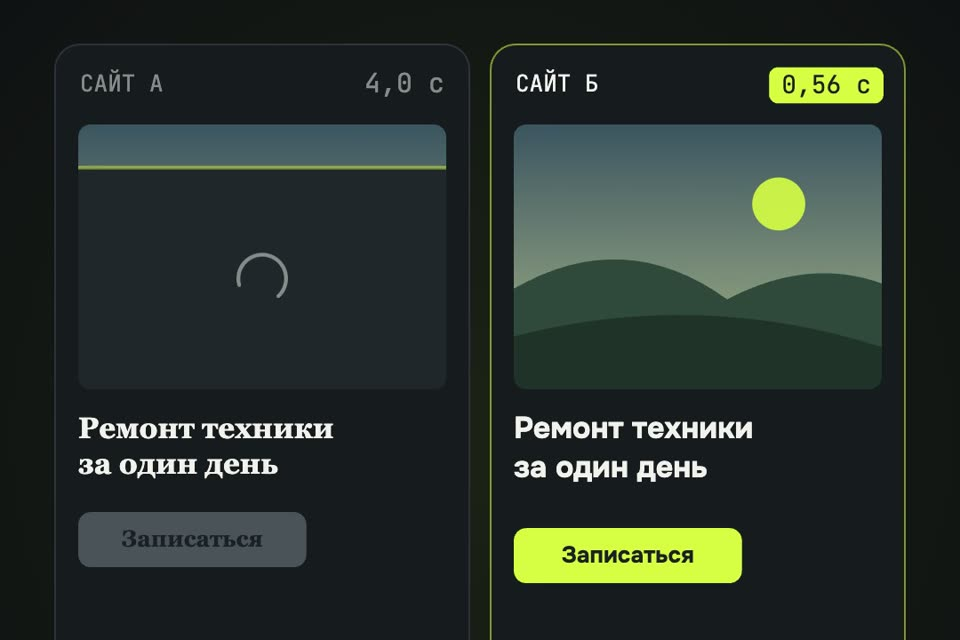

Сайт грузится 20 секунд, а не полсекунды
Обещанные промпт и чек-лист. Промпт отдаёте Claude Code в папке сайта: он сначала меряет, потом чинит четыре пункта из ролика, потом меряет снова и показывает «до / после».
- бесплатно
- оригиналы не удаляются
- каждый пункт отдельным коммитом
К ролику «Два одинаковых сайта» · обновлено 28 октября 2026

Нужен Claude Code и доступ к коду сайта (папка проекта или репозиторий). На конструкторах без доступа к коду (Tilda, Wix в редакторе) промпт не сработает: пройдите чек-лист руками в настройках конструктора.
Первый результат за 3 шага
Замерьте, как сейчас
Без цифры «до» не понять, помогло ли.
Откройте pagespeed.web.dev, вставьте адрес сайта, вкладка «Мобильные». Бесплатно, около минуты. Запишите оценку, LCP (когда показалась главная картинка или заголовок) и CLS (насколько прыгает страница).
То же самое локально, если сайт ещё не выложен:
npx lighthouse http://localhost:3000 --only-categories=performance --viewОценка от 0 до 100 и две цифры: LCP в секундах и CLS. Зелёная зона — 90 и выше, LCP до 2,5 с, CLS до 0,1.
Вставьте промпт в Claude Code
Откройте Claude Code в папке сайта.
Ускорь мой сайт по четырём пунктам. Сначала замерь, потом чини, потом замерь снова.
0. Замер «до». Запусти локальную сборку сайта и прогони Lighthouse в мобильном режиме
(npx lighthouse <адрес> --only-categories=performance --form-factor=mobile --output=json),
три раза, возьми медиану. Запиши: оценку, LCP, CLS, общий вес страницы в МБ,
сколько картинок грузится при открытии. Ничего не меняй, пока не покажешь мне эти цифры.
1. Картинки. Найди все картинки тяжелее 300 КБ. Для каждой сделай копию в WebP
(качество 75–80) шириной не больше, чем её реальный размер на экране ×2.
Оригиналы НЕ удаляй и не перезаписывай: новые файлы рядом, в разметке поменяй ссылки.
Если на сайте есть фреймворк со своим компонентом картинок (next/image, astro:assets),
используй его вместо ручной конвертации. Всем <img> проставь width и height.
2. Не всё сразу. Картинкам ниже первого экрана поставь loading="lazy" и decoding="async".
Главной картинке первого экрана (обычно это и есть LCP) lazy НЕ ставь,
ей поставь fetchpriority="high".
3. Шрифты. Найди веб-шрифты. Если они грузятся с Google Fonts или другого сервера,
предложи перенести их к себе (woff2). Основному шрифту (1–2 начертания, не больше)
добавь <link rel="preload" as="font" type="font/woff2" crossorigin>,
в @font-face поставь font-display: swap. Остальные не предзагружай.
4. Кэш. Найди, где настраиваются заголовки (netlify.toml, vercel.json, _headers, nginx, .htaccess,
настройки хостинга). Для статики с хэшем в имени (картинки, шрифты, js, css) поставь
Cache-Control: public, max-age=31536000, immutable. Для HTML — no-cache.
Если у файлов нет хэша в имени, скажи мне об этом и не ставь им immutable:
иначе после обновления посетители будут видеть старую версию.
5. Бонус: скрипты. Сторонние скрипты (счётчики, чаты, виджеты) без defer/async в <head>
покажи мне списком. Переносить или ставить defer — только после моего «да».
6. Замер «после» тем же способом. Покажи таблицу «до / после» по каждой цифре.
Проверь глазами, что страница выглядит как раньше: скриншот до и после на ширине 390 px.
Правила: не удаляй файлы, не меняй дизайн и тексты, не ставь платные сервисы и CDN.
Каждый пункт — отдельным коммитом, чтобы любой можно было откатить.Тот же промпт отдельным файлом: prompts/skorost.md.
Claude сначала показывает цифры «до» и ждёт. Потом делает четыре коммита, по одному на пункт, и в конце даёт таблицу «до / после» и два скриншота страницы.
Выложите и проверьте снова
Кэш работает только на настоящем хостинге.
Выложите изменения и снова прогоните pagespeed.web.dev. Чтобы проверить кэш: откройте сайт в Chrome, DevTools → Network, обновите страницу. У картинок и шрифтов в колонке Size должно стоять «(memory cache)» или «(disk cache)».
Оценка выше, LCP меньше. При повторном заходе картинки и шрифты не качаются заново.
Чек-лист: четыре пункта из ролика
1. Картинкифото с телефона весит мегабайты
- Ни одной картинки тяжелее 300 КБ на странице. Фото с телефона — это 4000×3000 и 3–5 МБ, на экране телефона оно занимает ~400 px в ширину.
- Формат WebP (или AVIF). Ширина файла — не больше двойной ширины на экране.
- У каждого
<img>естьwidthиheight: место под картинку резервируется заранее, текст под ней не съезжает.
Сжать одну картинку без Claude: squoosh.app (бесплатно, работает в браузере) или в терминале:
cwebp -q 80 -resize 1200 0 photo.jpg -o photo.webp2. Не грузить всё сразукартинки внизу — когда до них долистают
- Картинкам ниже первого экрана —
loading="lazy". Браузер начнёт их качать, когда до них останется немного прокрутки. - Главной картинке первого экрана lazy не ставить: иначе она появится позже, а не раньше. Ей —
fetchpriority="high".
<img src="hero.webp" width="1200" height="900" fetchpriority="high" alt="…">
<img src="work-01.webp" width="600" height="450" loading="lazy" decoding="async" alt="…">3. Шрифты заранееиначе текст на глазах меняется и прыгает
- Шрифт лежит на своём сервере в woff2, а не тянется с чужого.
- Основное начертание предзагружено в
<head>. Не больше 2–3 файлов: каждый preload отнимает канал у картинок. - В
@font-faceстоитfont-display: swap: пока шрифт едет, текст виден запасным шрифтом, а не пропадает.
<link rel="preload" href="/fonts/onest-700.woff2" as="font" type="font/woff2" crossorigin>4. Кэшвторой раз — из памяти браузера
- Статика с хэшем в имени (
app.3f9a1c.js, картинки, шрифты):Cache-Control: public, max-age=31536000, immutable. - HTML:
Cache-Control: no-cache— браузер сверяется с сервером, и обновления сайта видны сразу. - Файлам без хэша в имени не ставьте immutable на год: после правки посетители увидят старую версию.
/assets/*
Cache-Control: public, max-age=31536000, immutable
/*.html
Cache-Control: no-cacheNext.js на Vercel ставит такой кэш файлам из /_next/static сам; проверьте только картинки из public/.
Бонус: скриптыв ролик не вошло
- Счётчики, чаты и виджеты в
<head>безdeferилиasyncдержат отрисовку страницы. Ставьтеdeferили переносите вниз, но после этого проверьте, что счётчик и чат работают.
Наш замер из ролика
Два демо-сайта мастерской с одинаковыми текстами и разметкой: «тяжёлый» (13 фото с телефона в JPEG, всё грузится сразу, шрифт без preload, Cache-Control: no-store) и «быстрый» (те же фото в WebP, lazy, preload шрифта, кэш на год). Разница только в этих четырёх вещах. Chrome на Mac, профиль сети 9 Мбит/с и 165 мс задержки, процессор замедлен в 4 раза, экран телефона 412 px. Медиана трёх прогонов.
| Что меряли | Тяжёлый | Быстрый |
|---|---|---|
| Главная картинка показалась (LCP) | 19,7 с | 0,56 с |
| Скачано при открытии | 47,5 МБ | 0,4 МБ |
| Картинок запрошено до прокрутки | 13 | 5 |
| Шрифт пришёл | 15,9 с | 0,54 с |
| Второй визит: скачано | 47,5 МБ | 0 МБ |
| Оценка Lighthouse, мобильный (медиана 5 прогонов) | 57 | 90 |
Главная картинка: 3,7 МБ JPEG 4000×3000 → 141 КБ WebP 1200×900, в 26 раз легче.
Если застряли
После правок оценка не выросла
Посмотрите в отчёте PageSpeed раздел «Диагностика»: тормозить может то, чего нет в четырёх пунктах — тяжёлый JavaScript, медленный сервер (TTFB больше 0,8 с), чужие виджеты. Попросите Claude: «разбери отчёт Lighthouse и предложи, что чинить, по одному пункту».
Картинки стали мыльными
Поднимите качество до 85 или ширину файла до тройной ширины на экране. Оригиналы промпт не удаляет, откатить можно коммитом пункта 1.
После обновления сайта у людей старая версия
Кэш на год поставили файлам без хэша в имени. Уберите immutable у этих файлов или добавьте хэш в имя при сборке. Откат — коммит пункта 4.
Чего это не гарантирует
- Цифры выше — замер нашего демо-сайта, а не обещание для вашего. «20 секунд» получилось потому, что на демо 13 фото по 3–4 МБ; у вас будет по-своему.
- Оценка PageSpeed скачет от прогона к прогону на несколько пунктов. Сравнивайте медиану трёх.
- Медленный сервер, тяжёлый JavaScript и чужие виджеты эти четыре пункта не лечат.
- Кэш ускоряет только повторный визит. Первый заход он не ускоряет.